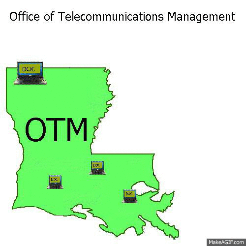

The telecommunications industry has been an exciting place for me to grow a career. In the late 1990s, the State of Louisiana Office of Telecommunications Management (OTM) LaNet, the established ISP for multiple higher ed institutions in LA, needed personnel to support the growing number of agencies requesting internet access. Having only recently purchased my first PC, I underwent 3 years of on-the-job training in IP, DNS, network monitoring, network billing, and network access technologies including ethernet, token ring, ATM, synchronous and frame relay access. LaNet, an internet2 gigapop site, used ATM to provide separate logical connections to participating universities. Within a few years, Louisiana Optical Network Infrastructure (LONI), was established to assume the gigapop role. LONI, in its infancy, had three staff members who built a statewide network on fiber scarcely used by the managing state government entity in addition to leased dark fiber from other vendors. The universities maintained some services with LaNet before moving to contracted services also managed by LaNet. Most of my OTM years were spent in the WAN area where more than 10 executive branch agencies with locations in many or all of 64 parishes used FRF5 services across our infrastructure to support networks grown independently using overlapping address space, different routing protocols, and varying security features. When FRF5 was eliminated from state contracts, the WAN group organized and implemented a statewide conversion to ethernet access across OTM’s newly implemented MPLS VRF architecture. OTM managed ethernet access contracts for all state government facilities, and the WAN group served as the bridge between customers and service providers. LONI continued to grow, ordering OTM ethernet circuits from regional LONI POPs to additional post-secondary institutions and independently adding new services for LONI customers such as Google and Netflix cache servers. Meanwhile, the OTM LAN group moved Baton Rouge executive branch agencies into state owned buildings on the downtown fiber campus and supported these customers to the NIC (as opposed to an edge router). The OTM security components separated LAN from WAN creating a black hole for me in the network environment. When the security supervisor position opened, I was fortunate to be selected as OTM intended to eliminate the logical separation and implement MPLS VRFs in the LAN. While the overlapping address space issue had largely been corrected by forcing agencies to move into a new private IP range, customers were billed based on usage, so separate VRFs made this more feasible. During the two years I spent as security supervisor, after uniting the segments into a single routing domain, I largely assisted my two staff members with a migration from Cisco to Fortinet firewalls and modifying or implementing new VPN tunnels for customer access needs across public networks. The State of Louisiana was preparing to consolidate all executive branches to one agency, the Office of Technology Services (OTS). As this occurred, I was personally very glad I had moved out from the WAN group to get additional network experience. The consolidation moved agency technical personnel into all branches of IT (applications, databases, storage, and network et cetera). Each area received a representative or two to assist in the support of agency IT needs under the new umbrella. The addition of some ten statewide networks using equipment from assorted vendors, with assorted levels of documentation and support, and of varying age provided a forest of opportunity to master new IT skills.
Soft Skills
Telecom and IP networking are just that fascinating
I like a work environment where its ok to be intense sometimes.

Adrianne Crouse, 2012?
While training an employee new to telecom